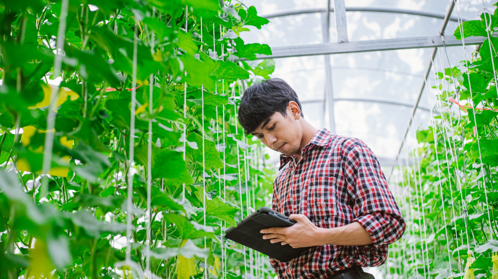

“Sus recursos educativos y programas comunitarios están marcando una verdadera diferencia.”
Javier Morales
Profesor de ciencias
“Me encanta cómo EcoFood conecta a agricultores locales con diversos consumidores.”

Manuel Varela
Ingeniero Agrónomo
“Gracias a EcoFood, he aprendido a comprar y cocinar de forma más responsable.”

Camila Fernández
Chef y Activista Ambiental